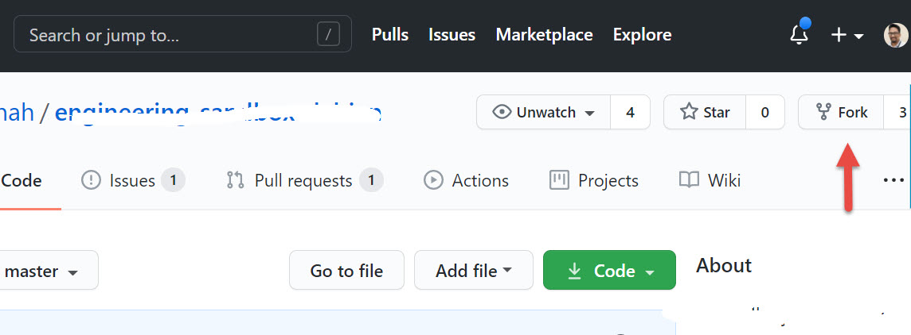

How to fork a github repo and give a pull request
You found a useful repository in github. You have some suggestions to the owner of git hub.Do you try to find out owners email and send a email to him about that repo? What is the standard way to modify the content of that repo?
For this we have to do the following
- Fork the original repo to our github
- Clone forked repo to our machine
- Create a branch
- Make our changes on that branch
- Push it back to our repo.
- Click the Compare & pull request button.
- Click Create pull request to open a new pull request.
Fork that repo to our github account Link to heading
For forking an repo click on the fork button on the repo home page

https://github.com/<YourgithubUserName>/<originalreponame>
This repo contain all code and branches in the original repository.
Clone your forked repo in our local machine Link to heading
Clone this forked repo in our local machine with forked repo. This will contain all the branches and files in that repo.
git clone https://github.com/<YourUserName>/<originalreponame>
Create a branch in our forked repo Link to heading
Its a best practice to create a seperate branch for the our changes, FOr this we can use the following command.
git checkout -b our_changes_branch
Also you can set the upstream repo ( the Original Parent repo )
git remote add upstream https://github.com/<originalreponame>
to be continued…